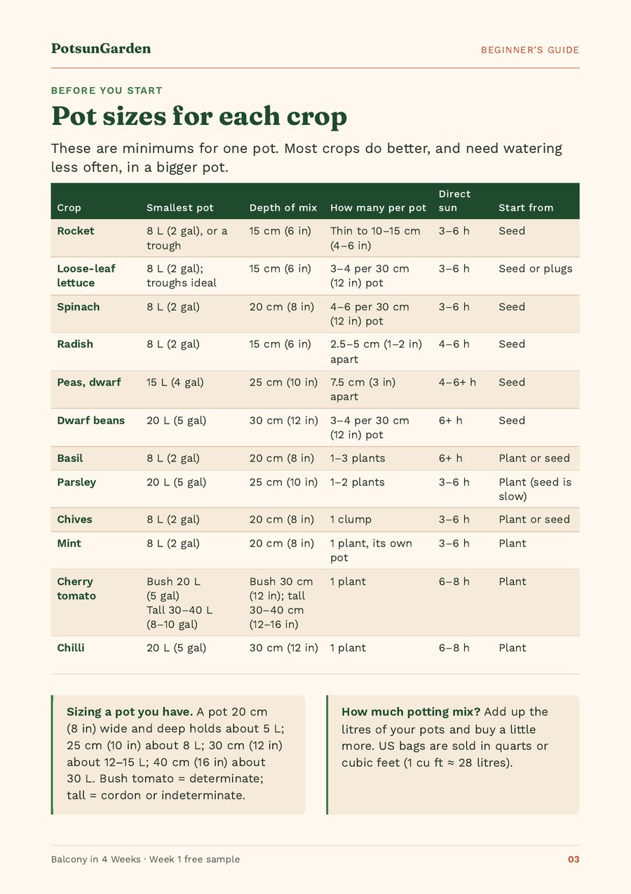

Pot sizes for vegetables on a balcony: a chart for 12 easy crops
Most salads, radishes and herbs need a pot of at least 8 litres (2 gallons) with 15–20 cm (6–8 in) of potting mix. Parsley needs 20 litres (5 gallons) and 25 cm (10 in); bush cherry tomatoes, chillies and dwarf beans need 20 litres (5 gallons), 30 cm (12 in) deep; tall tomatoes need 30–40 litres (8–10 gallons). These are minimums: bigger pots need watering less often. Here is the full chart for twelve easy crops, and how to read it.
Quick facts
| Rocket, lettuce, radish | 8 L (2 gal), 15 cm (6 in) of mix |
|---|---|
| Spinach, basil, chives, mint | 8 L (2 gal), 20 cm (8 in) of mix; mint in its own pot |
| Parsley | 20 L (5 gal), 25 cm (10 in) |
| Dwarf peas | 15 L (4 gal), 25 cm (10 in) |
| Bush cherry tomato, chilli, dwarf beans | 20 L (5 gal), 30 cm (12 in) |
| Tall tomato | 30–40 L (8–10 gal), 30–40 cm (12–16 in), with a 1.5–1.8 m (5–6 ft) cane |
| Pot volume by size (wide and deep) | 20 cm (8 in) about 5 L · 25 cm (10 in) about 8 L · 30 cm (12 in) about 12–15 L · 40 cm (16 in) about 30 L |
| Drainage | Holes in every pot; no gravel layer in the bottom |
| Weight | A wet 30-litre (8-gallon) pot can weigh 20 kg (45 lb) or more |
| Buying mix | Add up the litres of your pots; 1 cubic foot is about 28 litres |
What size pot does each vegetable need?
These are minimums for one pot. Almost every crop does better, and needs watering less often, in something bigger. If you are unsure between two sizes, go one size up.
| Crop | Smallest pot | Depth of mix | How many per pot | Direct sun | Start from |
|---|---|---|---|---|---|
| Rocket (arugula) | 8 L (2 gal), or a windowbox/trough | 15 cm (6 in) | Thin to 10–15 cm (4–6 in) | 3–6 h | Seed |
| Loose-leaf lettuce | 8 L (2 gal); troughs ideal | 15 cm (6 in) | 3–4 per 30 cm (12 in) pot | 3–6 h | Seed or plugs |
| Spinach | 8 L (2 gal) | 20 cm (8 in) | 4–6 per 30 cm (12 in) pot | 3–6 h | Seed |
| Radish | 8 L (2 gal) | 15 cm (6 in) | 2.5–5 cm (1–2 in) apart | 4–6 h | Seed |
| Peas, dwarf | 15 L (4 gal) | 25 cm (10 in) | 7.5 cm (3 in) apart | 4–6+ h | Seed |
| Dwarf beans | 20 L (5 gal) | 30 cm (12 in) | 3–4 per 30 cm (12 in) pot | 6+ h | Seed |
| Basil | 8 L (2 gal) | 20 cm (8 in) | 1–3 plants | 6+ h | Plant or seed |
| Parsley | 20 L (5 gal) | 25 cm (10 in) | 1–2 plants | 3–6 h | Plant (seed is slow) |
| Chives | 8 L (2 gal) | 20 cm (8 in) | 1 clump | 3–6 h | Plant or seed |
| Mint | 8 L (2 gal), own pot | 20 cm (8 in) | 1 plant, its own pot | 3–6 h | Plant |
| Cherry tomato | Bush 20 L (5 gal); tall 30–40 L (8–10 gal) | Bush 30 cm (12 in); tall 30–40 cm (12–16 in) | 1 plant | 6–8 h | Plant |
| Chilli | 20 L (5 gal) | 30 cm (12 in) | 1 plant | 6–8 h | Plant |
Sources for the pot sizes: University of Wisconsin–Madison Extension; University of Maryland Extension (types of containers, containers and salad tables); RHS (radish spacing). Figures are minimums, rounded up to common pot sizes.
Where the sources disagree, we use the larger figure. Our minimums follow the bigger of the sizes published by the University of Maryland Extension (two pages, 2023 and 2026), the University of Wisconsin–Madison Extension and the RHS, rounded to common pot sizes. Wisconsin, for example, gives leaf lettuce, spinach, radish and green onions at least 2 gallons (about 8 litres) and tomatoes, peppers and bush beans at least 5 gallons (about 20 litres), 12–18 inches deep; Maryland puts full-size tomatoes and peppers at 8–10 gallons and 12–16 inches deep. Maryland's newer table allows smaller pots for lettuce (½ gallon) and radish (1 pint), but balcony pots dry out faster in wind, so we stick with the more cautious figures.
How many litres does a pot hold?
Pots are often sold by diameter, not volume. As a rough guide:
- A pot 20 cm (8 in) wide and deep holds about 5 litres.
- A pot about 25 cm (10 in) wide and deep holds about 8 litres.
- A pot 30 cm (12 in) wide and deep holds about 12–15 litres.
- A pot 40 cm (16 in) wide and deep holds about 30 litres.
To work out how much potting mix to buy, add up the litres of all your pots and buy a little more. In the US, bags are sold in quarts or cubic feet; 1 cubic foot is about 28 litres.
Bush or tall tomatoes?
The tomato row has two sizes because there are two kinds of plant. A bush tomato (called determinate in the US) stops at a set height and needs at least 20 litres (5 gallons), 30 cm (12 in) deep. A tall or cordon tomato (indeterminate) keeps growing all season, needs a cane of 1.5–1.8 m (5–6 ft) and wants 30–40 litres (8–10 gallons), 30–40 cm (12–16 in) deep. On a small or windy balcony, a compact bush variety is the easier start.
Bigger pots are easier pots
A small pot holds little water, so on a sunny, windy day it can dry out in hours. The RHS makes the same point in its container advice: generally, the bigger the pot and the plant, the easier it is to look after. If you can only afford a few pots, buy fewer, larger ones and grow fewer crops in them. Four to six crops you look at every day will do better than twelve crammed in.
One exception: mint always gets its own pot. It spreads by underground stems and takes over anything it shares with.
Do pots need gravel in the bottom?
Every pot needs holes in the bottom so extra water can escape. A layer of gravel or broken crocks at the bottom does not help. Research summarised by Washington State University shows that water does not move easily from a fine material (potting mix) into a coarse one (gravel), so the mix above the gravel stays wetter, not drier. Maryland Extension gives the same advice. Fill the whole pot with potting mix and give the roots the space instead.
Use bagged potting mix (sold in the UK as multi-purpose compost), not garden soil. Garden soil packs down in a pot and drains badly.
Plastic, terracotta or fabric?
- Plastic and glazed pots hold water longer and are light.
- Terracotta looks lovely but dries quickly in sun and wind. Maryland Extension notes that porous materials such as clay and wood dry out faster than plastic or metal.
- Fabric grow bags are very light, which helps on a balcony.
- Colour matters: pale pots stay cooler than black ones in summer sun. Maryland warns that dark containers can get hot enough to injure young roots.
Weight and the neighbours below
Wet potting mix is heavy: a 30-litre (8-gallon) pot can weigh 20 kg (45 lb) or more. Keep big pots close to the wall, check your lease or building rules, and fit railing planters on the inside of the railing with brackets made for them. Before you fill anything, check where the drainage water will go, so it does not drip onto the balcony below. Saucers or pot feet help; empty saucers after watering so roots do not sit in water.

Frequently asked questions
What size pot do I need for cherry tomatoes on a balcony?
A bush (determinate) cherry tomato needs at least 20 litres (5 gallons) of potting mix, 30 cm (12 in) deep. A tall (cordon or indeterminate) variety needs 30–40 litres (8–10 gallons), 30–40 cm (12–16 in) deep, and a cane of 1.5–1.8 m. Both need 6–8 hours of direct sun.
Can I grow lettuce in a shallow pot?
Yes. Loose-leaf lettuce manages with 15 cm (6 in) of mix in a pot of at least 8 litres (2 gallons). A long trough is ideal because you can sow a little at a time and cut leaves as they grow.
Should I put gravel in the bottom of my pots?
No. A gravel or crock layer does not improve drainage; research summarised by Washington State University shows it keeps the mix above it wetter. Use pots with drainage holes and fill them with potting mix all the way down.
How much potting mix do I need?
Add up the volume of your pots in litres and buy a little more. A 30 cm (12 in) pot takes about 12–15 litres. In the US, 1 cubic foot of mix is about 28 litres.
Can I grow several herbs in one pot?
Most herbs can share a large pot if they like the same sun, but mint should always have its own pot, because it spreads by underground stems and crowds out its neighbours.
Sources
Figures come from our guide Balcony in 4 Weeks (2nd edition) and the free Week 1 PDF unless a source below is named in the text. Sources checked on 18 October 2026.
- University of Maryland Extension: Types of containers for growing vegetables
- University of Maryland Extension: Growing vegetables in containers and salad tables
- University of Wisconsin–Madison Extension: Growing vegetables in containers
- RHS: How to grow radishes
- Washington State University (L. Chalker-Scott): The myth of drainage material in container plantings (PDF)
- RHS: Container maintenance